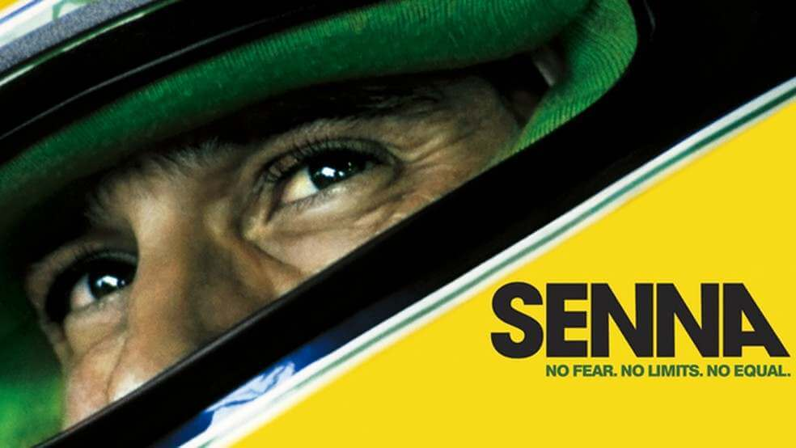

Filmes sobre Ayrton Senna

Documentário "Senna" (2010)
Este documentário retrata a vida e carreira de Ayrton Senna, mostrando sua jornada na Fórmula 1, suas rivalidades, vitórias e o impacto de sua morte. Aclamado pela crítica, emocionou fãs no mundo inteiro.
Ver mais